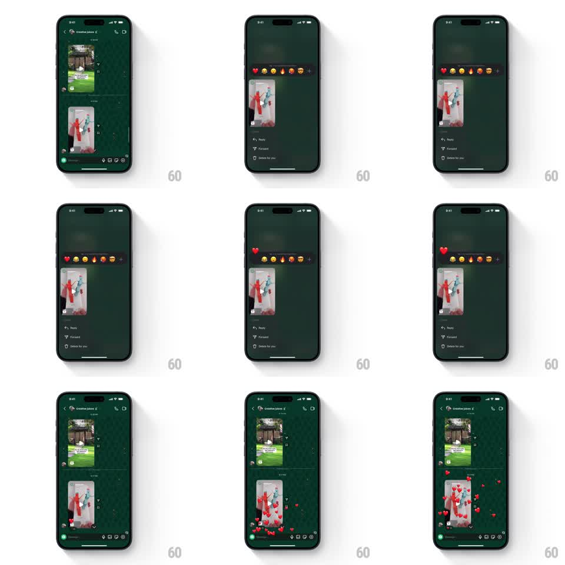

Media
Frame-by-frame

Rebuild this interaction 1:1: Instagram DM's long-press reaction - long-pressing a message bubble pops a reaction emoji bar and context menu; tapping the heart fires a heart particle explosion that floats up over the message as the menu collapses.

Rebuild this interaction 1:1: Instagram DM's long-press reaction - long-pressing a message bubble pops a reaction emoji bar and context menu; tapping the heart fires a heart particle explosion that floats up over the message as the menu collapses. ## Integration Integration: stack-agnostic spec - springs given as stiffness/damping, timed motions as duration + curve; map every value to your framework and animation library of choice. ## Scene Dark chat screen: header (back arrow, chat name, call/video icons), message bubbles on a near-black green-tinted background, input bar at bottom. Overlay state: dimmed/blurred backdrop, the pressed message lifted, emoji reaction bar (heart, laughing, surprised, fire, clap, +) floating above it, context menu (Reply, Forward, Delete for you) below. ## Motion spec Pattern: context menu + particle burst, ~1.5s total. - Long-press: backdrop dims to 70% (200ms), the pressed message scales 1 -> 1.03 and lifts with a shadow (200ms, ease-out); emoji bar pops in above it (scale 0.7 -> 1, spring ~400/20) with emojis staggering in left to right (30ms apart); menu slides up under the message (250ms). - Emoji tap: the chosen heart scales 1 -> 1.6 -> 1 (150ms) and detonates into 12-18 small hearts that spray outward with gravity arcs, drifting up over the message while fading (800ms, staggered sizes 8-20px). - Simultaneously the emoji bar and menu collapse (scale -> 0.8, fade, 200ms) and the backdrop undims. - A small heart badge settles onto the message's lower corner (scale 0 -> 1, spring ~350/18) as particles finish. ## Calibration - The particle burst starts on the same frame the menu begins collapsing - sequencing them reads as two separate effects. - Particles drift upward with slight horizontal wobble; straight-line particles read as confetti debris. ## Reduced motion Emoji bar and menu appear/disappear instantly; the reaction lands as the corner badge only, no particles. ## Don't miss - The pressed message stays visually lifted the whole time the overlay is up; dropping it early breaks the focus illusion. - The corner badge is the durable outcome - particles are ephemeral and must fully clean up (no stuck hearts).